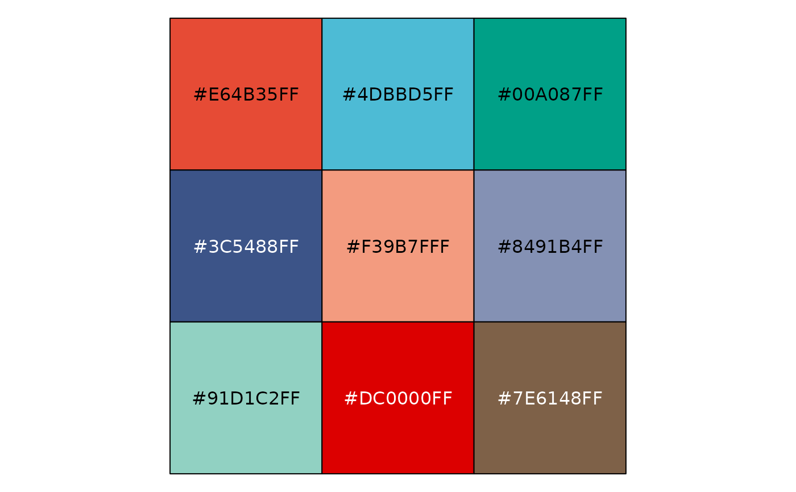
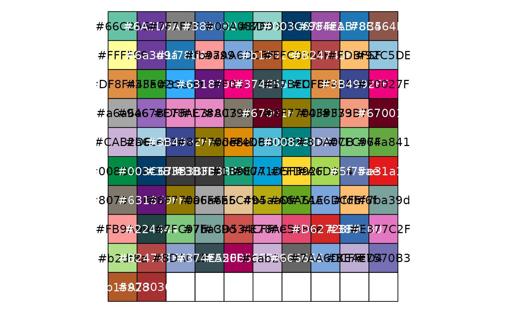
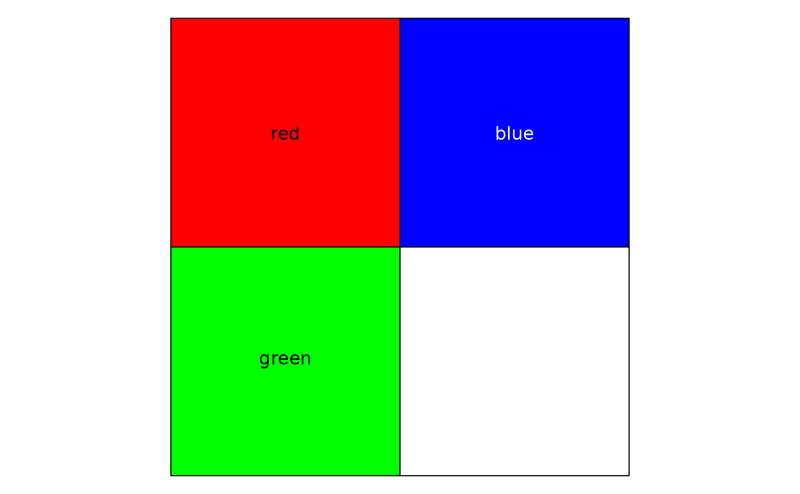

Retrieves color palettes from the IOBR package with options for randomization and visualization. Users can specify predefined palettes or provide custom colors.
Arguments
- cols
Character vector of colors, or one of: - `"normal"`: Use standard palette - `"random"`: Randomly shuffle the palette Default is `"normal"`.
- palette
Numeric or character specifying the palette. Options are 1, 2, 3, 4, or palette name. Default is 1.
- show_col
Logical indicating whether to display the color palette. Default is `TRUE`.
- seed
Integer seed for random number generator when `cols = "random"`. Default is 123.
Examples
# Get default palette
mycols <- get_cols()
#> [1] "'#E64B35FF', '#4DBBD5FF', '#00A087FF', '#3C5488FF', '#F39B7FFF', '#8491B4FF', '#91D1C2FF', '#DC0000FF', '#7E6148FF'"

# Get random palette
mycols <- get_cols(cols = "random", seed = 456)
#> ℹ Random palettes: 1 (palette1), 2 (palette2), 3 (palette3), 4 (palette4)
#> ℹ Using random seed: 456

# Use custom colors
mycols <- get_cols(cols = c("red", "blue", "green"))
